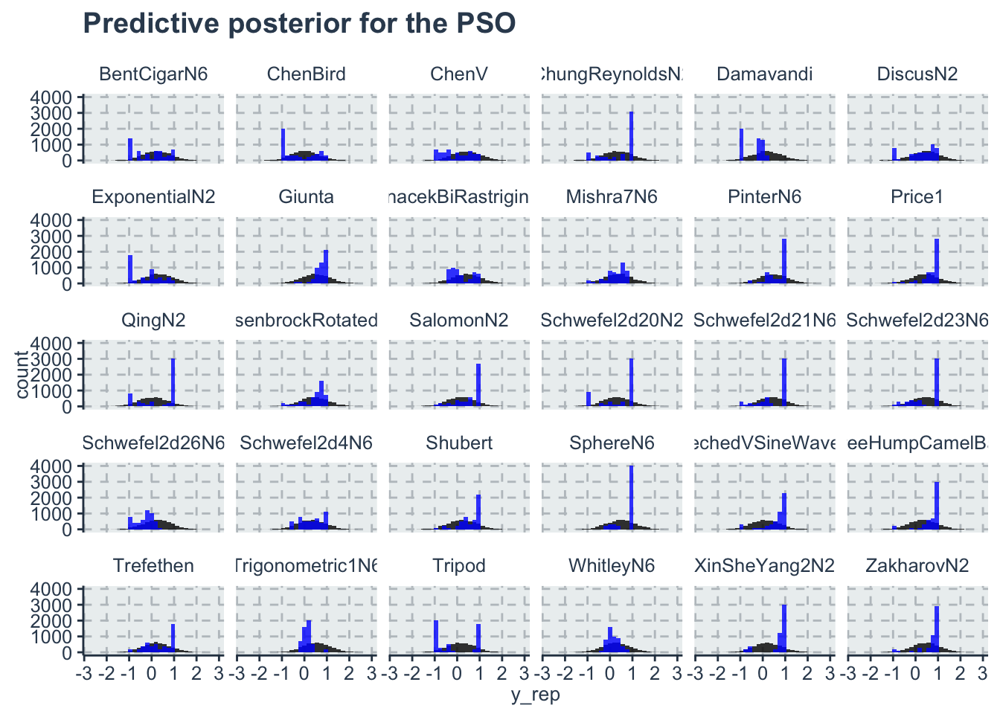

Chapter 7 Sensitivity analysis, model comparison and posterior predictive
In this chapter, we provide an example on how to do a sensitivity analysis and model comparison. For that we will use the Relative Improvement model of chapter 3.
Note that it is important to have a model that calculates the log likelihood to compute the WAIC or the LOO-CV. Here we will show only how to use and interpret the WAIC.
Reading the data for the (already prepared data) for the model
standata<-readRDS("./data/relativeimprovement-data.RDS")
algorithms<-readRDS("./data/relativeimprovement_algorithms.RDS")
bm<-readRDS("./data/relativeimprovement_bm.RDS")Here we consider 3 models for the relative improvement. The original model presented on chapter 3 and in the paper. A model without clustering information about the benchmarks (m1) and a model with a different set of priors (m2)
In m2 we consider HalfNormal(0,5) for both the s and the sigma parameters (instead of the exponential)
We are saving the files in a non-tracked folder because they are too big for github
relativeimprovement_fit_original <- stan(file = './stanmodels/relativeimprovement-original.stan',
data=standata,
chains = 4,
warmup = 200,
iter = 1000)
saveRDS(relativeimprovement_fit_original, file = "./data/gitignore/relativeimprovement_fit_original.RDS")standata_m1 = list(
N_total= standata$N_total,
y = standata$y,
N_algorithm = standata$N_algorithm,
algorithm_id = standata$algorithm_id
)
relativeimprovement_fit_m1 <- stan(file = './stanmodels/relativeimprovement-m1.stan',
data=standata_m1,
chains = 4,
warmup = 200,
iter = 1000)
saveRDS(relativeimprovement_fit_m1, file = "./data/gitignore/relativeimprovement_fit_m1.RDS")standata_m2 <- standata
relativeimprovement_fit_m2 <- stan(file = './stanmodels/relativeimprovement-m2.stan',
data=standata,
chains = 4,
warmup = 200,
iter = 1000)
saveRDS(relativeimprovement_fit_m2, file = "./data/gitignore/relativeimprovement_fit_m2.RDS")7.1 Compare models with and without clustering
First we get the log likelihood
log_lik_original <- loo::extract_log_lik(relativeimprovement_fit_original, merge_chains = T)
log_lik_m1 <- loo::extract_log_lik(relativeimprovement_fit_m1 ,merge_chains = T)Then we compute the waic
Now we use the compare function
Computed from 3200 by 9000 log-likelihood matrix
Estimate SE
elpd_waic -8723.2 53.7
p_waic 33.7 0.4
waic 17446.3 107.4
Computed from 3200 by 9000 log-likelihood matrix
Estimate SE
elpd_waic -8913.5 52.2
p_waic 6.6 0.1
waic 17827.0 104.4 elpd_diff se_diff
model1 0.0 0.0
model2 -190.3 20.1 We can see that the WAIC original (with clustering) provides a big improvement over m1 (without clustering).
7.2 Sensitivity analysis of priors
First let’s look at the WAIC
Computed from 3200 by 9000 log-likelihood matrix
Estimate SE
elpd_waic -8723.6 53.7
p_waic 34.1 0.4
waic 17447.2 107.5Comparing the models
elpd_diff se_diff
model1 0.0 0.0
model2 -0.4 0.1 We can see here that there is no significant difference between the models with the two priors. This already indicates some robustness in the estimation parameters regardless of the priors (which is expected since both are weakly informative priors).
Comparing the estimates for the intercepts of the algorithms only. Note that since we have a very big stanfit the summary calculations might take a bit longer.
a_alg <- c("a_alg[1]",
"a_alg[2]",
"a_alg[3]",
"a_alg[4]",
"a_alg[5]",
"a_alg[6]")
df_original<-summary(relativeimprovement_fit_original, pars = a_alg)$summary
kable(df_original, "html",booktabs=T, format.args = list(scientific = FALSE), digits = 3) %>%
kable_styling(bootstrap_options = c("striped", "hover", "condensed")) | mean | se_mean | sd | 2.5% | 25% | 50% | 75% | 97.5% | n_eff | Rhat | |
|---|---|---|---|---|---|---|---|---|---|---|
| a_alg[1] | 0.154 | 0.001 | 0.032 | 0.090 | 0.132 | 0.154 | 0.175 | 0.215 | 470.933 | 1.007 |
| a_alg[2] | -0.374 | 0.002 | 0.032 | -0.437 | -0.396 | -0.374 | -0.353 | -0.312 | 453.902 | 1.005 |
| a_alg[3] | 0.306 | 0.002 | 0.032 | 0.244 | 0.284 | 0.306 | 0.328 | 0.368 | 459.828 | 1.005 |
| a_alg[4] | -0.638 | 0.001 | 0.032 | -0.700 | -0.659 | -0.638 | -0.617 | -0.575 | 465.164 | 1.004 |
| a_alg[5] | 0.323 | 0.001 | 0.032 | 0.258 | 0.301 | 0.324 | 0.345 | 0.385 | 472.724 | 1.004 |
| a_alg[6] | -0.567 | 0.001 | 0.032 | -0.630 | -0.589 | -0.567 | -0.545 | -0.506 | 472.289 | 1.005 |
df_m2<-summary(relativeimprovement_fit_m2, pars = a_alg)$summary
kable(df_m2, "html",booktabs=T, format.args = list(scientific = FALSE), digits = 3) %>%
kable_styling(bootstrap_options = c("striped", "hover", "condensed")) | mean | se_mean | sd | 2.5% | 25% | 50% | 75% | 97.5% | n_eff | Rhat | |
|---|---|---|---|---|---|---|---|---|---|---|
| a_alg[1] | 0.148 | 0.002 | 0.031 | 0.083 | 0.129 | 0.148 | 0.169 | 0.209 | 423.994 | 1.016 |
| a_alg[2] | -0.380 | 0.001 | 0.031 | -0.445 | -0.400 | -0.380 | -0.359 | -0.322 | 426.036 | 1.015 |
| a_alg[3] | 0.300 | 0.002 | 0.031 | 0.236 | 0.280 | 0.302 | 0.321 | 0.360 | 428.207 | 1.016 |
| a_alg[4] | -0.644 | 0.002 | 0.031 | -0.709 | -0.664 | -0.643 | -0.622 | -0.585 | 431.340 | 1.012 |
| a_alg[5] | 0.318 | 0.002 | 0.031 | 0.253 | 0.298 | 0.319 | 0.339 | 0.378 | 422.176 | 1.015 |
| a_alg[6] | -0.573 | 0.002 | 0.031 | -0.638 | -0.593 | -0.573 | -0.552 | -0.514 | 417.598 | 1.012 |
We can see from both tables that the estimates of the algorithms intercepts are very similar, which starts to indicate a certain robustness of the model in respect to the priors.
7.3 Posterior predictive plots
To check for the posterior predictive we will use the original model.
First we extract the posterior of the predictive values. We have in this posterior 3200 rows (800 iterations for every chain) and 9000 columns (1 for each point in the dataset). Lets start by resampling to get only 100 estimates for each observation. Then we will create a data frame that has a column for each type of observation. Then we will pivot longer so the 100 observations go to a single column. This will multiply the dataset number of rows by 100 . This will facilitate plotting with ggplot
y_rep_posterior <- as_tibble(rstan::extract(relativeimprovement_fit_original, pars='y_rep')$y_rep)
y_rep <- as_tibble(t(sample_n(y_rep_posterior, size=100)))
y <- as_tibble(standata$y) %>% select(y_obs=value)
algo<-as_tibble(standata$algorithm_id) %>% select(algo=value)
algo$algo<-dplyr::recode(algo$algo, '1'=algorithms[1], '2'=algorithms[2], '3'=algorithms[3], '4'=algorithms[4], '5'=algorithms[5], '6'=algorithms[6])
benchmark <- as_tibble(standata$bm_id) %>% select(benchmark=value)
benchmark$benchmark<-dplyr::recode(benchmark$benchmark,
'1'=bm[1],
'2'=bm[2],
'3'=bm[3],
'4'=bm[4],
'5'=bm[5],
'6'=bm[6],
'7'=bm[7],
'8'=bm[8],
'9'=bm[9],
'10'=bm[10],
'11'=bm[11],
'12'=bm[12],
'13'=bm[13],
'14'=bm[14],
'15'=bm[15],
'16'=bm[16],
'17'=bm[17],
'18'=bm[18],
'19'=bm[19],
'20'=bm[20],
'21'=bm[21],
'22'=bm[22],
'23'=bm[23],
'24'=bm[24],
'25'=bm[25],
'26'=bm[26],
'27'=bm[27],
'28'=bm[28],
'29'=bm[29],
'30'=bm[30]
)
df <- algo %>%
add_column(benchmark) %>%
add_column(y) %>%
add_column(y_rep) %>%
tidyr::pivot_longer(cols=4:103,names_to = 'sample', values_to='y_rep')There are multiple ways to plot predictive posterior. One of them is with a histogram plot of the predictions, or lines for th intercept etc.. Here we plot the histogram of each benchmark function for the PSO algorithm. Note that the model predicts better for some benchmark functions and not so well for others, but in average all the observed values are inside the histogram of the predictions
ggplot(data=dplyr::filter(df, algo=='PSO'))+
geom_histogram(aes(x=y_rep), fill='black', alpha=0.8)+
geom_histogram(aes(x=y_obs), fill='blue', alpha=0.8)+
facet_wrap(~benchmark)+
labs(title='Predictive posterior for the PSO')